Biology - X
Paths of Evolution
35
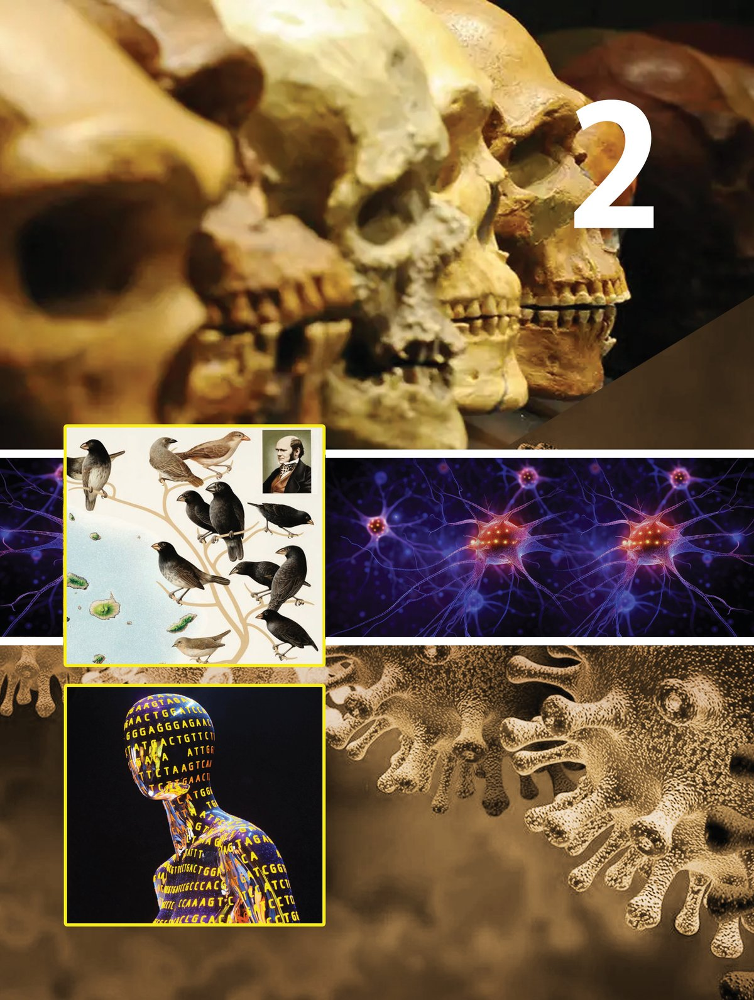
Biology - X
Paths of Evolution
35
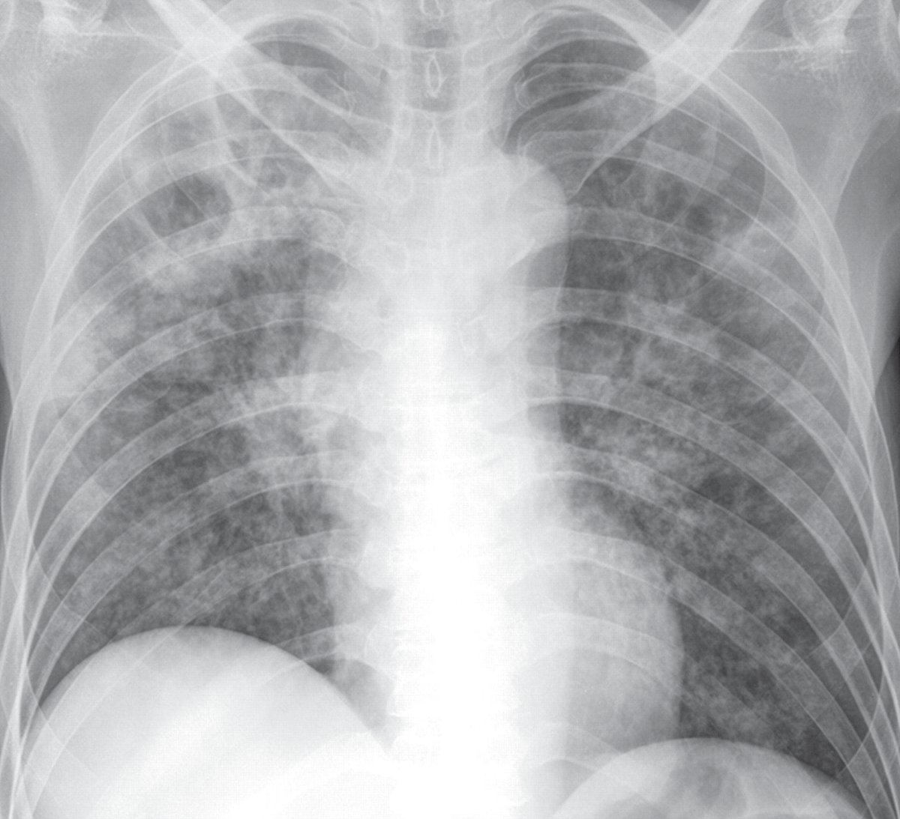
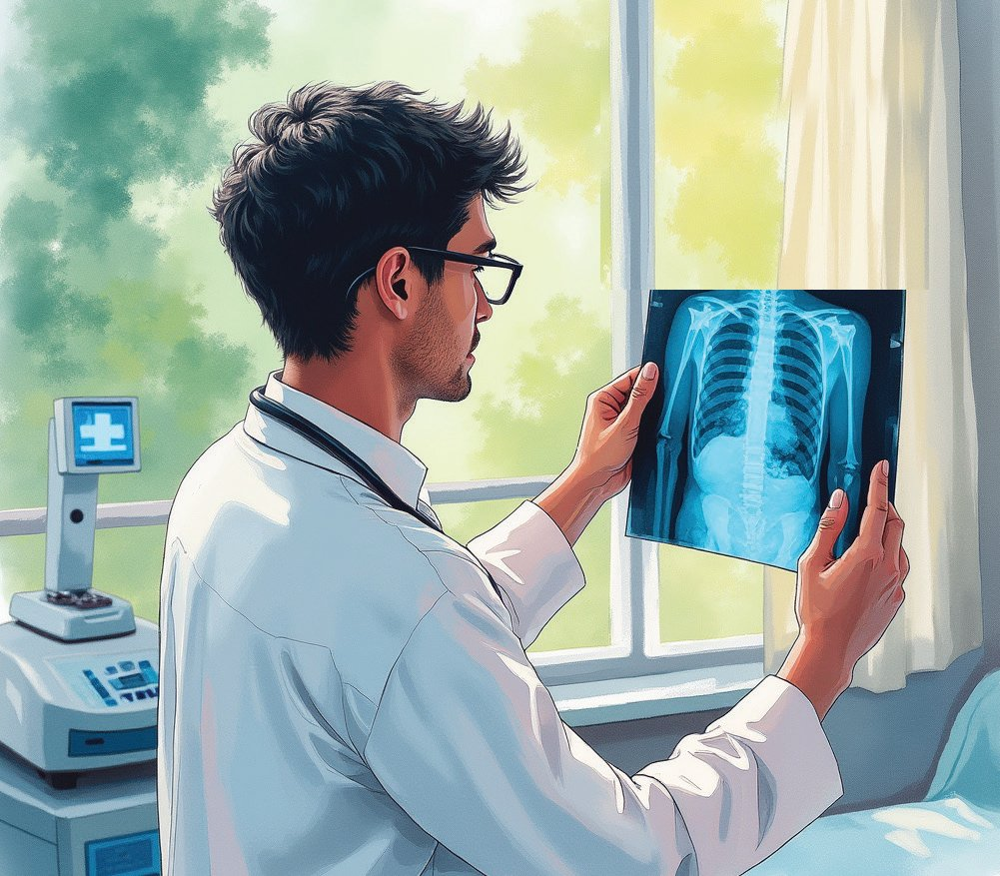
Biology - X
Case study A young man who was admitted to hospital with severe cough and phlegm was diagnosed tuberculosis by the doctor after testing his chest X-ray and lung fluid. He was given several antibiotics for six weeks and further, a specific antibiotic for 33 weeks. Ten months after the beginning of treatment, a culture of the lung fluid and a chest X-ray were performed to confirm that the tuberculosis was cured, and the treatment was completed. Two months later, the young man was again admitted to hospital with the same symptoms. Despite having treated with various antibiotics as done previously, he died due to breathing difficulty after 10 days. Further examination revealed that the disease got relapsed as the tuberculosis bacteria were activated again. To find out where these antibiotic-resistant bacteria came from, DNA of these bacteria was compared with the DNA of tuberculosis bacteria that had been collected and stored from the same patient. It was found that a mutation in a specific gene made the bacteria resistant to antibiotics. The mutated bacteria multiplied even in the presence of antibiotics and caused the disease.
You have just read the story happened in 1966 in connection with the discovery of bacteria that can resist antibiotics. Discuss and find out the answers to the given questions and prepare notes.
36

Biology - X
What was the treatment given initially to cure the disease? What was its result? ........................................................................................... Why didn’t the disease get cured even after giving treatment for the second time? ........................................................................................... How did the tuberculosis bacteria acquire resistance to antibiotics? ........................................................................................... What will happen if this bacteria transmit this ability to their next generations? Does the formation of such bacteria raise challenges in the field of medicine? Analyse the news given below and draft your opinion.
Antimicrobial resistance: a growing global health issue Doctors, public health professionals and scientists warn that some of the most trusted antibiotics currently used are ineffective against bacteria called 'superbugs'.
........................................................................................................................................... Superbugs
Bacteria that are resistant to antibiotics multiply and cause, diseases. This resistance caused due to mutations can be transmitted to their next generation. Over time, the proportion of resistant bacteria increases and through many other mutations, they acquire ability to resist more than one antibiotic. This leads to the formation of multidrug-resistant strains (superbugs). The formation of such bacteria has become a major concern in healthcare as common antibiotics turns ineffective against them. 37
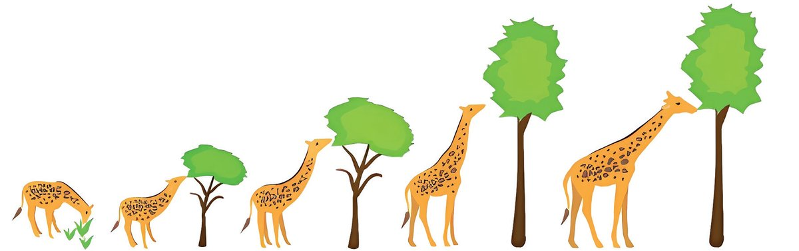
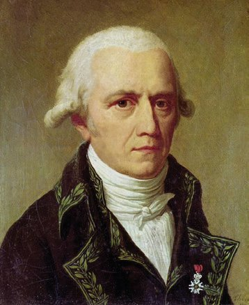
Biology - X
Organisms adapt to or survive the changes in their environment. Behind the formation of today's biodiversity from the primitive cell, a number of such processes may have been involved. The inquiries related to such processes had laid the foundation for the science of evolution. Many scientists were able to explain those theoretically.
Lamarckism (Theory of Inheritance of Acquired Characters) Jean Baptiste Lamarck was the French biologist who initiated early discussions related to biological evolution. His ideas are known as Lamarckism. Based on indicators, discuss and prepare notes on illustration 2.1 which substantiates the ideas put forward by him.
Lamarck 1744 - 1829
Giraffes with short necks that feed on the ground.
The giraffe's neck elongates as it stretches its neck to reach for leaves from higher branches due to food scarcity.
Illustration 2.1
Acquired characters were transmitted through generations, leading to the emergence of giraffes with longer necks.
Lamarckism
Indicators • Change in environment • Formation of acquired character • Inheritance of acquired character • Survival of giraffes with longer and shorter necks in a changed environment. Later scientists proved that acquired characters do not impart change in the genetic structure of organisms and therefore, are not inherited. 38

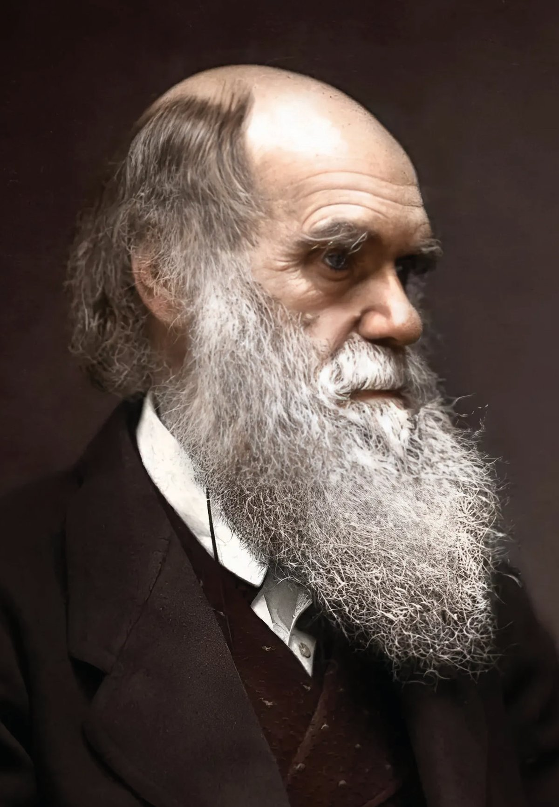

Biology - X
Darwinism
(The Theory of Natural Selection)
The English naturalist Charles Darwin’s ‘Theory of Natural Selection’ or Darwinism marked the foundation for the perspectives of modern evolution.
Charles Darwin (1809 - 1882)
H.M.S Beagle
39

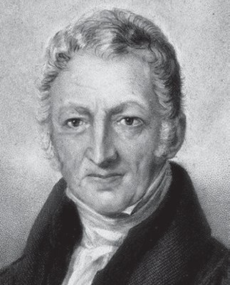

Biology - X
Charles Robert Darwin
Know the scientist
Charles Darwin was born on 12 February, 1809, at Shrewsbury, England, into a family of welleducated background. Darwin had completed school education as an average student. However, he had shown intense interest in the study of nature. In 1831, at the age of 22, he embarked on a five-year voyage on the ship H M S Beagle for cartographical purpose. During this voyage, Darwin explored areas including South America, Australia, and the Galapagos islands. He had meticulously observed and documented the diversity of flora and fauna there. Returning to England in 1836, Darwin analysed the specimens and observations he had made and deeply studied them by correspondence with other scientists through letters.
Thomas Malthus 1766 - 1834
Alfred Russel Wallace 1823- 1913
Thomas Malthus, an English economist and demographer, argued that when the human population grows rapidly food production will not increase in accordance with that and it may lead to problems such as poverty, disease, and war. This perspective of Malthus had greatly influenced Darwin too. While Darwin continued with his studies in 1858, he noticed the evolutionary studies of the British naturalist Alfred Russel Wallace. The papers of Darwin and Wallace were presented at a science conference. In 1859, he elaborated and presented his ideas in the book ‘On the Origin of Species’. Although his observations were initially opposed by the society, as more and more evidences emerged, Darwin's theory of evolution gained widespread acceptance. Darwin's theory of evolution is one among the most influential scientific ideas in the world. It can be applied in fields such as medicine, agriculture, and environmental science, apart from biology. 40


Biology - X
Charles Darwin was influenced to formulate the theory of evolution by observing the diversity in the beaks of finches at Galapagos Islands. Analyse illustration 2.2 and prepare notes based on the indicators. Seed eating finch
Cactus-eaters
Ancestral finch Insect-eaters Illustration 2.2
Galapagos finches
There are about fourteen different species of finches in the Galapagos archipelago. Ground, cactus and tree finches are some among them. Of these, ground finches are seed eaters and ground dwellers whereas cactus finches inhabit on cactus and eat seeds. Tree finches which shelter in trees are insectivorous. The major difference these species exhibit is the shape and size of the beak. The beaks of medium-sized seed-eating finches are different from those of large seed-eating and insect-eating ones. The beaks are their main means to obtain food. Birds with beaks of suitable shape or size, depending on the availability of food resources in the environment, will survive and produce more offspring.
Indicators • Diversity of finch’s beak • Cause of diversity • The way in which diversity influences survival. 41

Biology - X
Haven't you understood that organisms with certain characteristics favourable to the environment tend to survive, reproduce and produce more offspring? Draw your conclusions by analysing Darwin’s explanation on how these finches later got evolved into new species.
Over production Organisms produce more offsprings than environment can support. Variations Organisms show differences from each other in most features such as the size, immunity and seed production. These variations can be favourable or harmful to the organisms. Struggle for existence Limitation of resources including food, shelter and mates will lead to competition among organisms. Survival of the fittest Organisms with favourable variations survive in the struggle for existence. They reproduce more effectively and create new generations. Natural selection Favourable variations are passed on to the next generations. More variations accumulate over time leading to the creation of organisms that are unable to reproduce within the species. They evolve as new species.
42
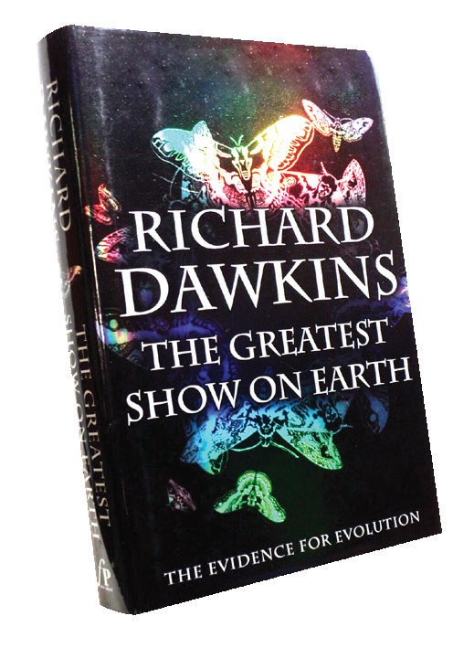

Biology - X
Let’s find A plant produces hundreds of seeds. However only a few among them attain complete maturity. What would be the circumstances that might lead a new plant species to evolve from this plant after millions of years? Prepare notes based on the theory of natural selection. The Greatest Show on Earth Scientists Rosemary and Peter Grant conducted more studies from 1973 to 2012 based upon Darwin's finches at Galapagos Islands. They observed structural changes in the of finch’s beak pertaining to its size, depth, and shape as a result of ecological stresses such as drought and changes in food availability. With the help of DNA sequencing technology, they identified BMP4 gene, that influences the depth of the beak and its strength as well as ALX7 gene that influences the shape of the beak. Over time, these genetic variations have led to the development of birds with distinctive beaks at Galapagos Islands, which has diverse ecological niches. This research direct through the studies of genetics, anatomy and molecular biology provided direct evidence for evolution. Evolution is called the 'Greatest Show on Earth'. Organise a classroom exhibition by selecting books on evolution from school library and other sources. How could the evolution of giraffes with long necks have happend? Observe the illustration 2.3, compare Lamarckism with Darwinism and prepare notes.
43
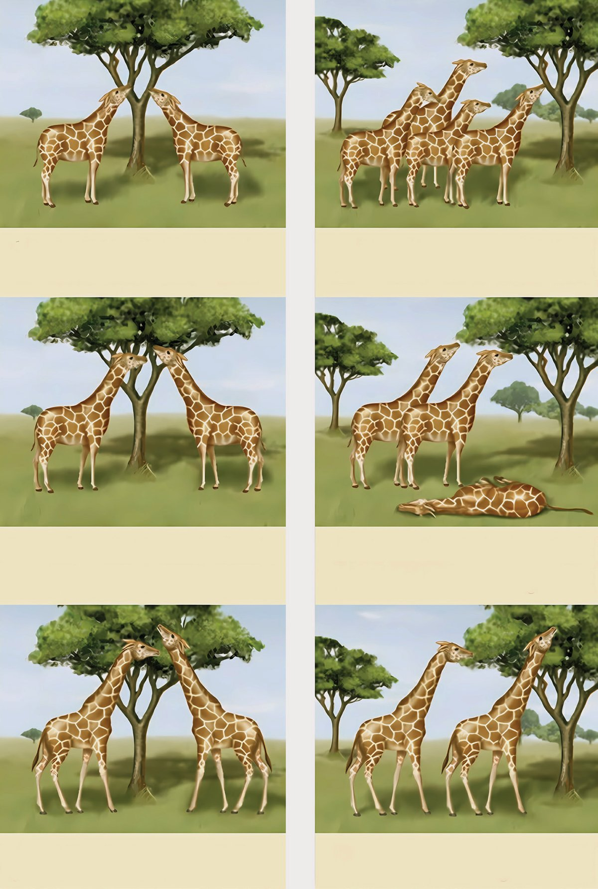
Biology - X
Lamarckism
Darwinism
Giraffes of earlier periods possessed short necks.
Giraffes with necks of varying length
Giraffes began to stretch their neck to obtain food.
Only the giraffes with longer necks survived in the competition for food
By continuous use giraffes with longer necks emerged
Only the giraffes with longer necks survived and become new species.
Environment causes variations in organisms
Environment selects the favourable variations in organisms
Illustration 2.3
Lamarckism – Darwinism comparison
44

Biology - X
Prepare and present classroom presentation on ‘ the comparative study between Lamarckism and Darwinism by collecting additional information and including more facts. Was there any limitation to Darwin's theory related to the origin of species? Did these limitations pose any challenge to Darwinism? Analyse the following description and draw inferences. Neo Darwinism Darwin's theory of evolution has been subjected to criticism because Charles Darwin had no idea about the genetic basis of variations and inheritance. However, with the discoveries of Gregor Mendel and the concepts about chromosomes and genes, it was recognised that the causes of variations that lead to evolution were genetic changes, genetic recombination during sexual reproduction, and gene flow. Later Darwinism became uncritically rationalised as more evidences and further studies from the fields of population genetics, palaeontology, environmental science, etc. were added to Darwinism to form Neo Darwinism. Many modern researches are being conducted, related to evolution. Evolutionary clinical medicine makes use of the ideas of evolution in healthcare. For example, it studies how bacteria or viruses evolve over time to become resistant to drugs. This can lead to the creation of new methods for treatment or the improvement of the existing ones. Personalised medicine is designed by looking at an individual's genes and family genetic history. DNA studies and artificial intelligence help doctors to understand about diseases and to find new ways to resist them. Haven't you understood the concept of evolutionary tree? Based on illustration 2.4 and the description given below, analyse and draw inferences about how each species is formed. 45

Biology - X
Bacteria Archaea
Bacteria Archaea Protista
Eukarya Plantae
Archaea and Eukarya share a common ancestor that bacteria do not. Protista, plants, fungi, and animals originate from common ancestor. LUCA
Fungi Animalia MRCA
Illustration 2.4
Evolution of different categories of organisms
Biodiversity on earth originated through a process called speciation, in which new species arise from a common ancestor. It is thought that all species have descended from a Last Universal Common Ancestor (LUCA), and different species might have a Most Recent Common Ancestor (MRCA). Although members of a population can produce offspring with differences through reproduction, they remain as a single species.
Speciation
If the members of a population get isolated from each other by ecological or other factors (mutation, natural selection, genetic recombination etc.) several variations might accumulate over time. When the members of a species become unable to reproduce new offspring mutually, they will evolve into different species.
46
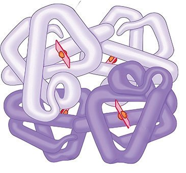
Biology - X
Indicators • Compare LUCA and MRCA? • Which is the category of organism that is nearest to fungi? Why? • What are the circumstances that lead to the formation of variations in organisms? • How do these circumstances lead to the formation of species?
Evidences of Evolution The evidences that support the theory of evolution are overwhelming. Studies ranging from the comparative study of biomolecules to the distribution of organisms on earth help us to understand the interrelationship among organisms. Molecular Biology The evolutionary relationship of organisms can be found out by comparing the sequence of nucleotides in the DNA and the sequence of amino acids in proteins in an organism with those of other organisms. You know that globin is the protein molecule of the respiratory pigment haemoglobin. The The arrangement of amino acids in the beta chain of haemoglobin molecule in humans as compared to other organisms is given in table 2.1. Analyse it and draw inferences based on the indicators. Organism
Difference in the amino acids of the beta chain as compared to humans
Chimpanzee
0
Gorilla
1
Rat
31
Table
2.1
Evidence given by molecular biology
47
Beta chain
Alpha chain
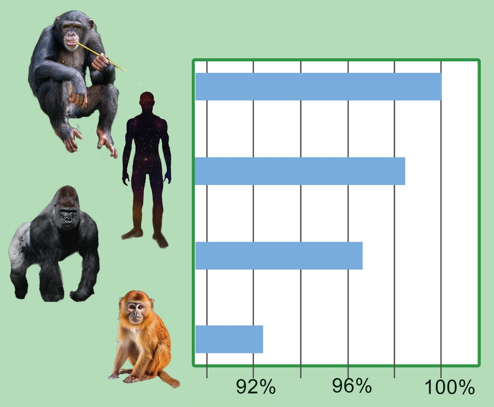

Biology - X
Indicators • Which organism has the most relationship with humans? Why?
evolutionary
• Which organism has a distant relationship with humans? Why?
evolutionary
• How does molecular biology help to find out the evolutionary relationship among organisms? The similarities and differences at the molecular level along with the knowledge obtained from comparative anatomy and palaeontology are correlated to depict the evolutionary tree. This is the most modern tool to understand evolutionary history.
Let’s Find Analyse the given illustration 2.5 and draft your inferences from the comparative study of DNA. The percentage of matching of the chimpanzee's DNA sequences with the DNA sequences of other organisms.
Chimpanzee
Humans
Gorilla
Monkey Illustration 2.5
Comparison of DNA sequences
48


Biology - X
Comparative Anatomy The comparative study of anatomy of organisms provide strong evidences to evolution. Analyse the illustration 2.6 and description, given below, prepare notes on how the similarities in the internal structure of different organisms validate the process of evolution.
Man
Cat
Illustration 2.6
Whale
The bones in the forelimbs of humans and cats, the flippers of whales and the wings of bats are similar. But, these organs differ in their external structure and function.
Bat
Anatomy and evolutionary relationship
Fossil Evidences Fossils are the remains or traces of ancient organisms. Analyse the following illustration 2.7 and prepare a note on how fossils help to understand evolution of life.
Organic evolution is a gradual process. Eg: The ancestors of horses had shorter legs than the ones in out times.
Illustration 2.7
Fossils which are connecting links reveal the evolutionary relationship between organisms. e.g.: Archaeopteryx that possesses the characteristic features of both reptiles and birds
Evidences given by fossils
49
It is proven that many species have become extinct that were living on Earth in the past. e.g.: Dinosaurs, Mammoths
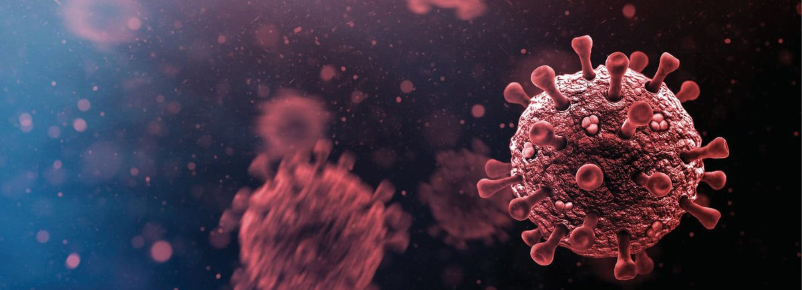


Biology - X
Evolution – A continuous process In most of the viruses, RNA is the genetic material. RNA viruses evolve rapidly because RNA has more possibility to undergo mutations than DNA. Mutations play a crucial role in the evolution of the viruses. Certain mutations allow the virus to overcome their host immune system or resist antiviral drugs. They enable the viruses to utilise host cell more effectively and proliferate. Such mutations result in new variants of the virus, promoting their spread through natural selection. The Delta COVID virus spread rapidly because of the mutations that gave it the ability to infect cells. Mutations in Omicron's spike protein have effected them to overcome vaccines and immunity.
Find more evidences that validate evolution, prepare and present a classroom presentation. Listen to the conversation of children.
Viruses evolve in a very short span of time. But in the case of the evolution of humans, I have read that, it will take lakhs of years.
Would sudden evolutionary changes similar to that of virus also occur in the evolution of humans?
Human evolution is a prolonged process that continues for a very long time. What could have been the changes that have happened to humans during this period? 50


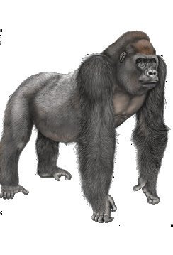

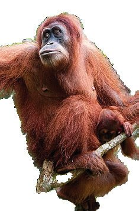
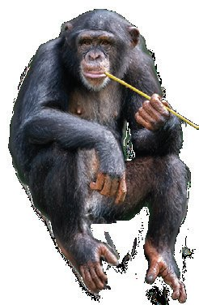
Biology - X
The common ancestors of mammals such as monkeys, apes, and humans belonged to the group of primates. What are the common characteristics of primates? • A thumb that can be opposed to other fingers • Binocular vision • • • Which are the organisms included in the human evolutionary tree? Observe the illustration 2.8 and based on the indicators, conduct a discussion and draw inferences.
Monkey
Gibbon
Orangutan
Chimpanzee
Human
Hominoidea
Cercopithecoidea Small sized brain Having tail
Gorilla
Anthropoidea
Big sized brain Without tail
Primates Illustration 2.8
Human Evolutionary tree
Indicators • Two categories of Anthropoidea • Common category including apes and humans 51
ans Did hum rom evolve f s? monkey . Find out


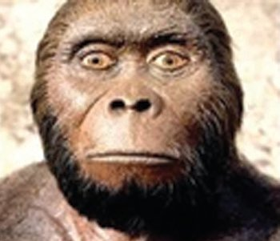
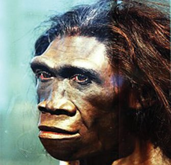

Biology - X
Find out the closest organism to humans in the evolutionary point of view. Identify and write down the reason. Make a self evaluation of the validity of your findings based on the evidences provided by the comparative study of biomolecules of the organisms given in Table 2.1 You have understood that fossils play a vital role in disclosing the history evolution. The scientific world has succeeded in explaining the history of human evolution based on the available fossils. There may be other organisms also in the human evolutionary path from the MRCA which connects chimpanzees and human beings. Analyse the given description and complete the table 2.2.
Cranial capacity Sahelanthropus tchadensis
350 cm3
The first link in the human evolutionary series. Fossils have been excavated from Tchad in Africa.
Astralopethecus
450 cm3
Almost complete fossils of organisms belonging to this group have been obtained from Africa. The skeletal structure confirms bipedalism.
Homo habilis
600 cm3
Fossils are obtained from Africa. Large skull. Made tools with stones using hands. Lived in small groups. Began hunting.
Homo erectus
900 cm3
Fossils are obtained from Africa, Asia and Europe. They were able to walk upright on two legs. Large forehead, omnivores, used excellent stone weapons for hunting. 52
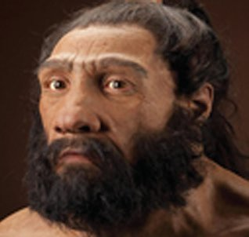
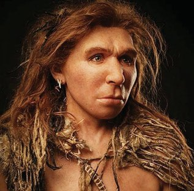
Biology - X
Homo neanderthalensis
1450 cm3
Contemporaries of modern man. Fossils have been found from Germany. They had small, sloping forehead and thick eye brows. They buried dead bodies.
Homo sapiens
1350 cm3
Modern man. They acquired technology and agricultural methods. They domesticated animals and built cities. They are culturally the most evolved category. Humans
Cranial capacity
Characteristics
Sahelanthropus tchadensis Astralopethecus Homo habilis Homo erectus Homo neanderthalensis Homo sapiens Table
2.2
Members in the human evolutionary path
What is the evolutionary trend in the development of human cranial capacity? ................................... ................................... What influence does brain development have in human evolution? Discuss and draw conclusions based on the information given below.
Neanderthals and modern man Both Neanderthals and modern man possess a common ancestor. They had been inhabiting together for thousands of years and have exchanged genes with each other. Genetic evidences suggest that non-African modern man contains nearly 1-2% of Neanderthal DNA. Cranial capacity of Neanderthal man was slightly larger than that of modern man. Their brain structure was more suitable for vision and body control. But, the brain of modern man is helpful for social interaction and complex thinking. Neanderthals got extinct 40,000 years ago. 53
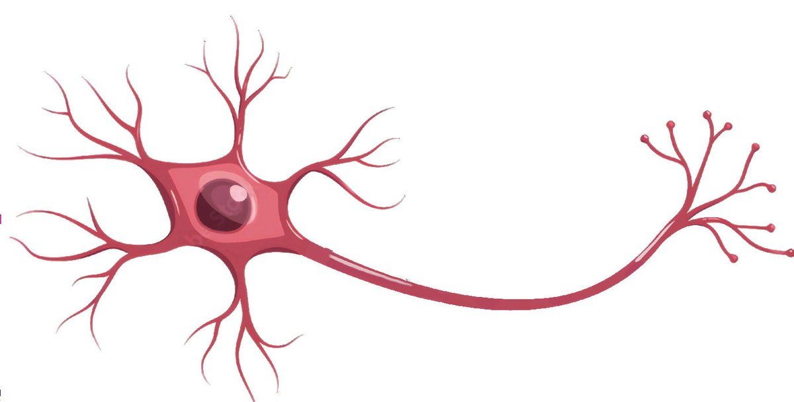
Biology - X
In the last 3 to 4 million years, increase in the brain capacity is a major trend in human evolution. The size of the brain nearly trippled over the course of two million years.This gave complex social behaviour, to make tools, to use language, and to perform higher-level cognitive functions. The increase in cranial capacity has also helped man to adapt to changing environments, develop culture and to use advanced technologies. Brain development laid the foundation for the transition from ‘small-brained’ ancestors to Homo sapiens. Understanding the nervous system, which includes the brain and related parts, can help us gain more evolutionary insights.
Human Nervous system You know that the nervous system plays a major role in controlling and coordinating the vital functions of the body. The nervous system consists of the brain, spinal cord, nerves and receptors.
Neurons Nerve cells or Neurons are the basic building blocks of the nervous system. They are specialised cells which are capable of receiving stimuli from the surroundings and to form suitable messages. Based on the description given, analyse the illustration 2.9, make notes on the structure of the neuron and illustrate a flow chart, showing the path of messages through it.
Axon
Cell body
Axonite
Dendron
Dendrite
Synaptic knob Illustration 2.9
Structure of neuron
54
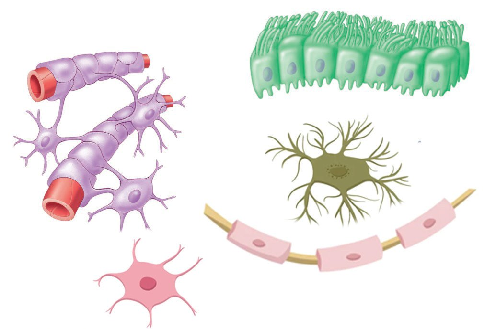
Biology - X
Cell body or cyton is the centre of the neuron. Cell membrane, cytoplasm, nucleus and cell organelles are seen here. The fine fibres arising from the cell body are called dendrons. Their branches are called Dendrites. The messages received by the dendrites from the adjacent neurons are transmitted to cyton through the dendrons. The longest fibre from the cell body is called Axon. Its branches are called Axonites. The impulses from the cell body reach the axonites through axons. The knob like structure seen at the tip of the axonite is called Synaptic knob. It contains the neurotransmitter (e.g.: Acetylcholine) to transfer chemical messages to its adjacent neuron.
Find more or examples f neuro s. transmitter
Are there only nerve cells in the nervous system? Observe figure 2.1 and description given below and prepare notes.
Ependymal cell Oligodenrocyte Microglial cell Schwann cell Astrocyte Figure
2.1
Cells in the nervous system
Neuroglial cells More than half of the brain and spinal cord are the cells which are shown in figure 2.1. They are neuroglial cells. These cells which have the ability to divide cannot receive stimuli or transmit messages. The different functions of neuroglial cells are given below. Add more functions of neuroglial cells, including the information you will get as you learn the upcoming topics. • Bring nutrition necessary for neurons • Eliminate wastes • Act as defence cells • 55

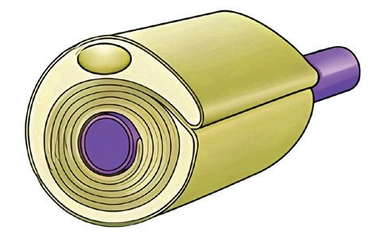

Biology - X
Find out the difference between the neuron given in illustration 2.9 and the neuron illustrated in fig 2.2 below. Analyse the given description and gain an understanding of the usefulness of this structural peculiarity to the neuron.
Myelin sheath Figure
Myelin sheath
The cyton parts of a group of neurons are covered by a membrane. These parts, seen in the spherical shape are called ganglia.
2.2
Myelin Sheath
You have understood that, in some neurons, the axon is covered by a layer called myelin sheath. It is made up of a shiny white fat called Myelin. The major functions of the myelin sheath are to increase the speed of transmission of messages by acting as an insulator, to provide nourishment to the neuron and to protect the axon from external injuries. Myelin sheath in the brain and spinal cord is produced by oligodendrocytes and in the nerves by Schwann cells. In the brain and the spinal cord, the part where myelinated neurons with are more abundant is called the white matter and the part where the cell bodies and parts of the neurons without a myelin sheath are seen is called the grey matter." In humans, who are at a higher level of evolution, there exists a nervous system mechanism that functions to generate and coordinate physical responses in accordance with external and internal changes. Observe the given illustration 2.10 and gain an understanding of the main parts of the human nervous system. 56

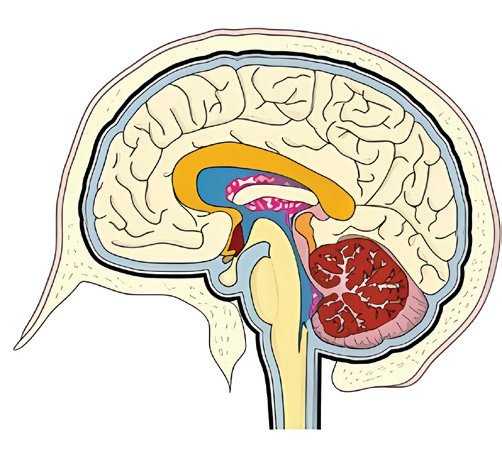
Biology - X
Nervous system Central nervous system Includes Brain and Spinal cord
Peripheral Nervous system Includes 12 pairs of cranial nerves and 31 pairs of spinal nerves that connect central nervous system to the organs. It also includes receptors and nerve ganglia.
Illustration 2.10 Parts of the nervous system
Brain and Spinal Cord Analyse the illustration 2.11 and its description, and prepare a note on how the parts of the central nervous system, such as the brain and spinal cord are protected. Meninges Cerebrospinal fluid
Illustration 2.11 Protection of the nervous system.
Brain and spinal cord are covered by the three-layered Meninges. The cerebrospinal fluid is the fluid that is filled in between the inner membranes of the meninges, in the cavities of the brain and in the central canal of the spinal cord. Ependymal cells play a role in the formation of this fluid. Cerebrospinal fluid performs the following functions in the central nervous system. • Provides oxygen and nutrients to the tissues • Eliminates wastes • Regulates the pressure • Protects from external injuries 57
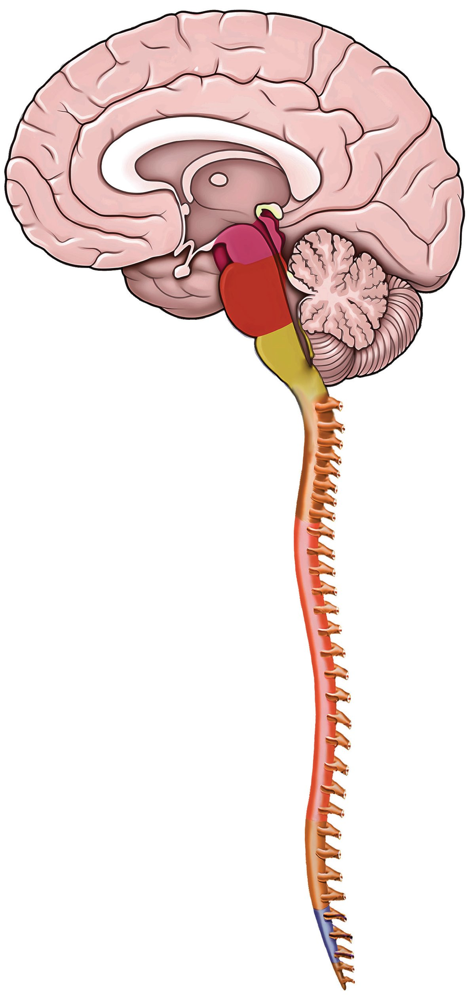
Biology - X
Analyse illustration 2.12 and understand the features and functions of the parts of brain and complete table 2.3. Cerebrum
Cerebellum
The largest part of the brain. The outer part where the grey matter is seen is called the cortex and the inner part where white matter is seen is called medulla. Plays an important role in problem solving, planning and voluntary movements. Centre of memory, intelligence, thinking and imagination. Provides various sensory experiences.
The second largest part of the brain. Seen behind and below the Cerebrum. Helps to maintain equilibrium of the body by coordinating muscular activities.
Thalamus
Seen in the inner part of the brain. Acts as the relay station of messages to and from the cerebrum. Pain killers act on this part of the brain. Hypothalamus
Helps in maintaining homeostasis by regulating body temperature, hunger, thirst and emotions.
Mid brain
Pons
Medulla oblongata
Initial assessment of messages regarding vision and hearing. This part has a role in the movement of eyes and eye brows.
Coordinates the muscular activities of the eye and the face. Regulates the rate of ventilation.
Controls involuntary activities like heartbeat, ventilation, vomiting, cough, sneezing etc.
Brain stem Illustration 2.12 Parts and functions of brain.
58

Biology - X
Part
Functions
Cerebrum Cerebellum
How do smoking, on of consumpti ug d dr alcohol an t the abuse affec ? rain health of b Find out.
Thalamus Hypothalamus Mid brain Pons Medulla oblongata Table
2.3
Parts and functions of brain
Spinal Cord Spinal cord is the part of the central nervous system seen as the continuation of medulla oblongata. Analyse illustration 2.13, its description and prepare a note. Grey matter
Central canal
White matter
The part which is filled with cerebrospinal fluid Dorsal root Transmits the messages from different parts of the body to the spinal cord Ventral root Transmits the instructions from the spinal cord to different parts of the body. Spinal nerve
Illustration 2.13 Spinal cord - structure
Spinal cord transmits messages from different parts of the body to the brain and transmits instructions from brain to the different parts of the body.
59
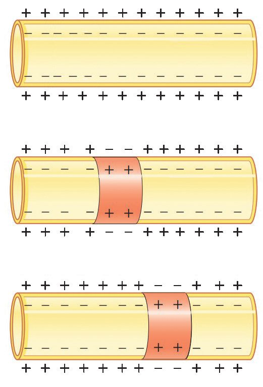
Biology - X
Aren't messages transmitted through the neuron? How does it happen?
Didn't you notice the child’s doubt ? The messages transmitted through the neuron are called nerve impulses. How do they get transmitted? Illustration 2.14 given below, analyse and discuss the following processes. All cells, including neurons, have an electric charge. The inner side of the cell membrane has a negative charge, compared to their outer side. When stimulated, positive ions from outside the cell membrane enter the cell, causing a temporary charge variation in that region. Identify, record and explain the child's doubts. The outer surface of the cell membrane is positively charged and the inner surface is negatively charged when not stimulated.
a)
Stimulus b)
................................................................... ...................................................................
c)
................................................................... ................................................................... ................................................................... Illustration 2.14 Transmission of impulses
60
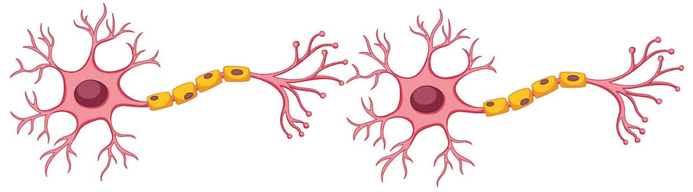
Biology - X
Will impulses be transmitted through a neuron to different parts of the body? To transmit a nerve impulse from one part of the body to another, it has to travel through different neurons. The part where an impulse is transferred from one neuron to another is called a synapse. Discuss the given illustration 2.15 based on the indicators and prepare a note on the synapse, which is formed by the connection of neurons.
Nuerotransmitter
Presynaptic membrane
Synaptic knob The tip of the axon that contains vesicles filled with neurotransmitters Synaptic vesicle
Synaptic cleft The small gap between nuerons
Receptor
Post Synaptic membrane The tip of the dendrites which contains receptors for receiving neurotransmitters
Illustration 2.15 The structutre of synapse
The synaptic knob secretes neurotransmitters to the synaptic cleft when the impulses reach there. These neurotransmitters bind with the receptors of post synaptic membrane and stimulates that neuron. Synapses transmit the impulses to only one direction and increase the speed of the impulses.
indicators • Parts of the synapse • Transmission of impulses through the synapse • Role of the synapse in controlling the direction and speed of the impulses 61
ses Are synap where found any than else other ons the juncti eet? neurons m Find out.

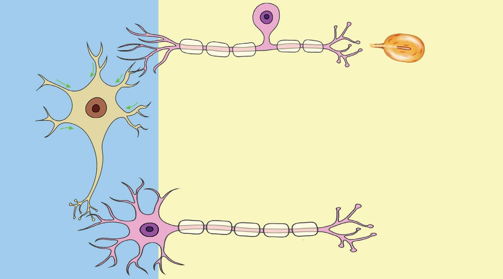


Biology - X
re any Are the ms organis n ai with br r e r size la g of se than tho s? n huma t. Find ou
Prepare a model of synapse using available materials and exhibit it in the class. An excerpt from an article about the synapse of the brain published in a science magazine is given below. Analyse and discuss the peculiarities of the human brain that distinguish it from those of other mammals and gain understanding of it.
Neocortex The cerebral cortex of the brain of mammals is modified into a complex structure of a six-layered neocortex. It is more developed in humans as compared to other mammals. It is estimated that the human neocortex contains approximately 16 billion neurons. In each of them, an average of about 7000 synapses are created with each other. Advanced mental processes such as thinking, decision-making, learning, recalling, etc. are made possible with the help of the synapses of neocortex. When we learn new things or gain new experiences, the number of these synapses increases, making our brain more efficient and effective.
Different types of neurons Observe the illustration 2.16 about different types of neurons and complete the given table 2.4. Central nervous system
Peripheral nervous system Receptor Sensory neuron Inter neuron Motor neuron
Illustration 2.16 Different types neurons
62
Organ (muscle/gland

Biology - X
Neuron
Function
Sensory neuron Motor neuron Inter neuron Table
2.4
Different types of neurons and functions
Nerves Nerves are made up of the axons of a group of neurons covered with a layer of fat and connective tissue. Different types of nerves are tabulated on the basis of the peculiarities of the building blocks. Complete table 2.5 suitably. Nerve
Building block
Sensory nerve
Function
Sensory neuron Transmits instructions from the central nervous system to the organs
Motor nerve Both sensory neuron and motor neuron
Mixed nerve Table
Nerve
2.5
Different types of nerves and their functions
Don't many activities, such as heartbeat and breathing, take place in our body without any conscious control over them? Haven't you understood the importance of the central nervous system to regulate such activities? Is its regulation is always possible by the central nervous system alone? Draw inferences by analysing the given instructions and complete table 2.6 appropriately by observing in the illustration given in 2.17.
Autonomous Nervous System Autonomous nervous system is a part of the peripheral nervous system that regulates body activities by itself. It includes the sympathetic nervous system and the parasympathetic nervous system. Sympathetic system equips the body to respond during emergency situations. Parasympathetic system prepares the body to relax, and perform routine functions such as digestion. 63

Biology - X
Sympathetic system
Parasympathetic system
Dilates
Constricts
Decreases production of saliva
Increases production of saliva
Increases heartbeat
Decreases heartbeat
Expands
Constricts
Slows down the process of digestion Increases hormone production
Stimulates the process of digestion
Slows down peristalsis
Increases peristalsis
Retains urine
Empties
Illustration 2.17 Autonomous nervous system
Organ/part
Sympathetic system
Parasympathetic system
Pupil of the eye Salivary gland Bronchiole Heart Adrenal gland
No direct influence
Stomach Small intestine Urinary bladder Table
2.6
Sympathetic and Parasympathetic System - A comparison
64
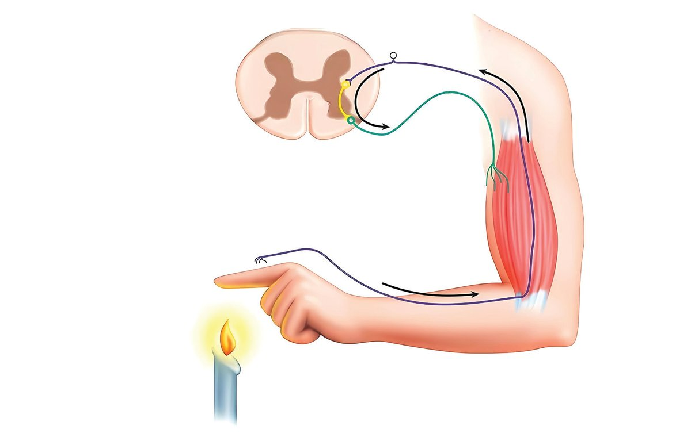
Biology - X
Haven't you understood the role of the autonomous nervous system, which is a part of the peripheral nervous system to regulate various physiological activities that take place beyond our consciousness? The central nervous system also plays a significant role to produce spontaneous responses according to stimuli. Don't we withdraw hands when we touch a hot object unknowingly? List out more similar situations. • Blinking of eyes when light falls on it • • Do we respond consciously in such situations?
Spontaneous Responses Reflex actions are reactions that occur spontaneously and involuntarily in response to stimuli. These actions can originate from both the spinal cord and the brain. The pathway through which impulses are transmitted in a reflex action is called a reflex arc. Analyse illustration 2.18 based on the indicators and prepare a note.
4 Motor neuron 3
Inter neuron
5 Muscle
2
Sensory neuron
1
Receptor
Illustration 2.18 Reflex action
65
Biology - X
Indicators • Parts included in the reflex arc • Functions performed by each part • Significance of reflex actions Tabulate the situations listed above, as controlled by the brain and controlled by the spinal cord. Shouldn't the health of the nervous system, that plays a key role in enabling the control and co-ordination of physiological activities, to be protected? The major ideas in a notice published by the Department of Health related to the healthcare of the nervous system are given below. By analysing this and collecting additional information, prepare a note on the precautions and habits to be followed for the protection of the nervous system. • Use a helmet, seat belt, etc. while riding a motor bike/driving. • Take necessary precautions while playing. • Taking bath in stagnant water may cause infections. Therefore, avoid such situations. • Those who engaged in jobs with the risk of brain injuries must use safety equipments such as helmets and safety belts. • Avoid habits suchas smoking, alcohol consumption and drug abuse. Do exercises. • Lack of adequate sleep can affect brain function, which leads to memory loss, anxiety, difficulty in learning and hinders emotional development. Therefore, it is essential to sleep for at least 8–10 hours a day. Shouldn't the nervous system differ according to the complexity of organisms? Analyse the given illustration 2.19 based on the indicators and write inferences. 66
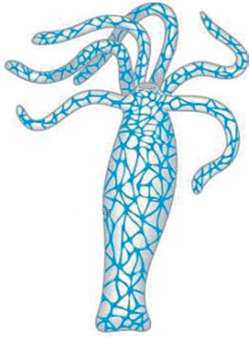
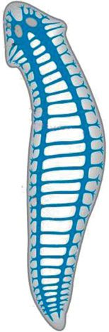
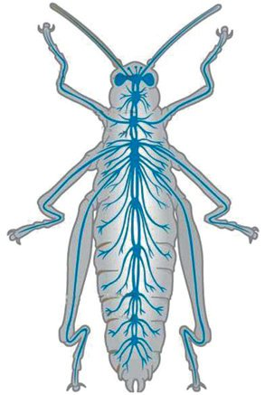
Biology - X
Hydra
Planaria
Insects
A neural network A pair of nerve The neurons in the head region unite with no control ganglia in the to evolve into a clear and somewhat center is seen. head region developed brain. The ganglia of paired coordinates the nerve fibers emerging from this are seen instructions. in each segment. Illustration 2.19 The nervous system of different organisms
Indicators • Compare the nervous system of hydra and that of planaria • Peculiarity of the nervous system of insects Evolution is the prolonged process of the origin of complex multicellular organisms from simple, unicellular ones. Evolution also gives a remarkable transition from simple nervous structures to highly complicated nervous systems. Such an evolution of the nervous system is the reason for the acclimatisation and survival of organisms in diverse environments. The development of a complex brain played a crucial role in human dominance over nature, enabling unique cognitive and technological progress. The presence of neocortex developed during the long course of evolution and the resultant language, intelligence and creativity like higher mental processes makes humans different from other organisms. Have you understood that the activity of the nervous system plays a remarkable role in enabling the organisms to make aware of their surroundings and respond accordingly. If the activities of the nervous system needs to take place completely and smoothly, the information from the external and internal environment should reach the central nervous system. The information from the external environment is perceived through sense organs. Do the sense organs in humans have the same proficiency compared to other organisms, though the human brain is more developed? This can be evaluated only when the relation between sense organs and the brain is analysed. Sensations provided together by the sense organs and brain are also to be understood. You will learn this in the succeeding chapters. 67
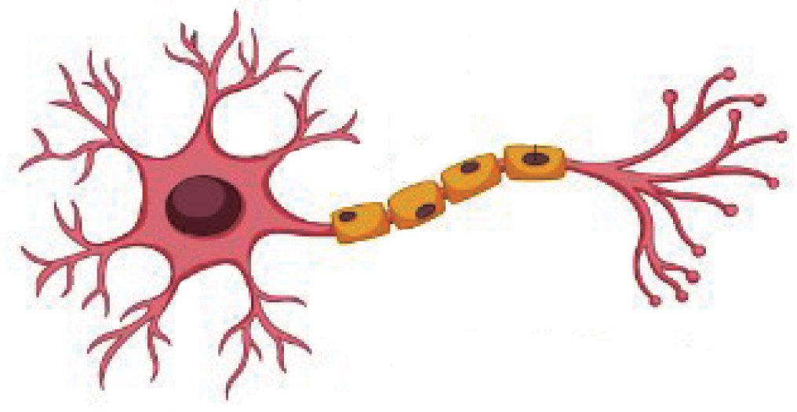

Biology - X
Let us Assess 1.
Two illustrations related to human evolution are given below. Based on the theory of natural selection, find out the correct one and explain the reason. Monkey
A
2.
Humans
Humans
Common ancestor
Monkey B
Although dolphins have a larger brain than that of humans, the level of thinking, language skills and social relationships are higher in humans. Evaluate this statement based on the following indicators. • Difference in the structure of the brain • Influence of natural selection
3.
Redraw the figure of the neuron and label the following parts by writing their names.
(a) The part of the neuron that receives impulses from the adjacent neuron (b) Part that contains neurotransmitter (c) Part that acts as insulator 4.
Darwin failed to explain the reasons of variation even though he argued that variations occur continuously in organisms. Evaluate this statement based on the findings of Neo Darwinism. 68
Biology - X
5.
Observe the illustration and answer the questions. A
Central Nervous System
B
Different parts of the body
(a) Identify the nerves A and B. (b) Are messages being exchanged between A and B? Explain. 6.
A table that includes the parts of spinal cord and their functions is given below. Arrange column B appropriately in accordance with column A of the table. A. Part
B. Functions/ Peculiarities
Central canal
Neurons with myelin sheath are numerous
White matter
Transmits impulses to the spinal cord
Dorsal root
Fluid present here nourishes the spinal cord
Grey matter
Transmits impulses to different parts of the body Cell body of neurons are numerous.
7.
Based on the information obtained from fossils, some human ancestors and their characteristics are given below. Find out the one which is arranged correctly from the given answers. (A) Homo habilis
(i) buried dead bodies
(B) Homo neanderthalensis
(ii) able to stand upright on two legs
(C) Astralopithecus (iii) made tools with stones using their hands (D) Homo erectus (iv) The skeletal structure confirms bipedalism
8.
(a) A : i, B : ii, C : iii, D : iv
(b) A : iii, B : i, C : iv, D : ii
(c) A : iii, B : iv, C : ii, D : i
(d) A : iv, B : i, C : iii, D : ii
Examine the information mentioned in the boxes labelled as P, Q, R, S. Identify the part of the brain associated with them and choose the correct answer. 69

Biology - X
Maintaining Homeostasis
Provide Sensory experiences
Relay station of impulses
Controls the rate of ventilation
P
Q
R
S
(a) P – Medulla oblongata Q – Pons R – Hypothalamus S – Thalamus (b) P – Pons Q – Hypothalamus R – Medulla oblongata S – Cerebrum (c) P – Hypothalamus Q – Cerebrum R – Thalamus S – Pons (d) P – Thalamus Q – Cerebrum R – Hypothalamus S – Medulla oblongata 9.
Complete the table by including the following in appropriate columns. •
Only long necked giraffes survive
•
Use and Disuse
•
Natural selection
•
Variations acquired in the life span
•
Through continuous use, giraffe's neck elongates
•
Inheritance of variations Lamarckism
Darwinism
y
y
y
y
Extended activities 1.
Prepare the human evolutionary tree by including maximum organisms and exhibit it in the class.
2.
Not only the origin of life, but mass extinctions also had occurred on earth. Collect more information about these and organise a seminar.
3.
Prepare a script for a short play to clarify the protection of the nervous system and present the play in schools and public places.
4.
Make a model of a nerve cell by using various materials such as beads of different colours, thin wires, woollen yarn etc. and present in the class.
5.
Is artificial intelligence a challenge to the human brain? Organise a debate on this. 70